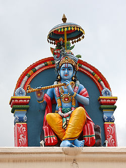

I just happen to like Krishna best. - I guess because he is a lover. He has a blue body and he was a cowboy.
-Allen Ginsberg
The counterculture wasn't just about opposing the mainstream U.S. culture. Many participants were also seeking better alternatives to the capitalistic and technocratic society they were raised in. In this search for a new society some hippies would look towards non-Western cultures for inspiration. Others would join communes, or look for ways to live in greater harmony with nature.
One of the ways the counterculture tried to separate itself from mainstream U.S society was through it's embrace of Indian culture. Many Hippies were highly interested in India, including it's religions, music and fashion. Thus emulating Indian culture became somewhat of a trend in the late 1960s. Unfortunately the many of the counterculture's views of India were based on stereotypes of India being a more spiritual and less logic based culture, rather than the way people in India actually lived. Many hippies would visit India, but a lot of times they would have difficulty respecting the the laws and cultural norms of Indian society.
India wasn't the only culture the counterculture looked to emulate however. Native Americans were seen as having a superior society to that of mainstream America. Just like with India, the hippies view of Native American culture was primarily based on outdated stereotypes such as Native American being a vanishing people and their unity with nature. Because Native American community's were much closer than India, many hippies could not only visit these cultures more easily, but also attempt to live amongst them.
Oftentimes there would be conflict between hippies and Native Americans when the hippies attempted to live on Native reservations. One such as example was the Tao Pueblo, which became a popular place to live for some hippies during the late 1960s. Many Tao residents were not fond of their new countercultural neighbors as they put further stress on the communities already limited natural resources and employment opportunities. Many new hippie residents of the pueblo, by contrast had difficult time adjusting to a more rural life and suffered from a high disease rate. There was also somewhat of a cultural clash as well as some hippies were disrespectful of Tao culture and many Taos did not entirely approve of the counterculture's way of life and the influence they may be having on their children.